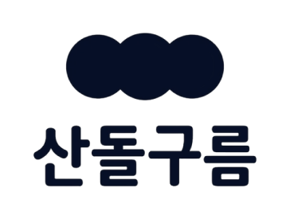
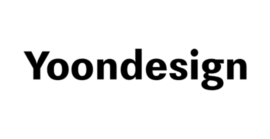
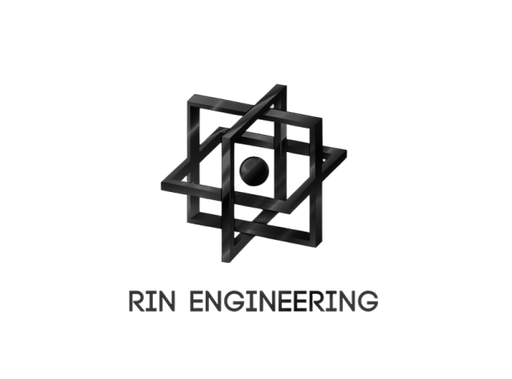
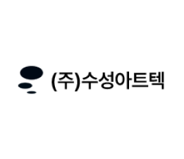
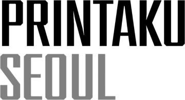

SANDOLLCLOUD
산돌구름은 크리에이터를 위한 폰트 플랫폼입니다. 국내 최대 폰트 플랫폼으로 독자적인 기술을 통해 편리한 폰트 서비스를 제공합니다. 세계의 다양한 브랜드의 폰트를 자유롭게 사용할 수 있고, 웹 환경에 최적화된 웹폰트 서비스를 통해 보다 크리에이티브한 표현을 구현할 수 있습니다.

2026 디자인이노베이션 졸업전시는 파트너사의 협력과 후원을 통해 진행되었습니다.

산돌구름은 크리에이터를 위한 폰트 플랫폼입니다. 국내 최대 폰트 플랫폼으로 독자적인 기술을 통해 편리한 폰트 서비스를 제공합니다. 세계의 다양한 브랜드의 폰트를 자유롭게 사용할 수 있고, 웹 환경에 최적화된 웹폰트 서비스를 통해 보다 크리에이티브한 표현을 구현할 수 있습니다.

윤디자인은 역사와 전통을 자랑하는 명품 서체 기업입니다. 한글에 대한 체계적인 연구와 꾸준한 본문체 개발, 국내외 유수 기업들과의 전용 글꼴 개발을 이끌어 오고 있습니다. 윤디자인의 36년의 기획 노하우와 창의적인 서체 디자인은 단순한 서체를 넘어 브랜딩디자인의 새로운 패러다임을 제시합니다.
릭스폰트는 다양한 자체 서체와 기업 전용서체, 다국어 폰트를 개발하는 타입디자인 전문기업입니다. 700여 종의 자체 폰트를 기반으로 다양한 디자인 환경에 필요한 서체를 제공하며, 기업의 고유한 아이덴티티와 브랜드 가치를 담아내는 전용서체 개발과 폰트 서비스를 보이고 있습니다.

린엔지니어링은 제품 설계부터 시제품 제작, 금형 개발 및 양산까지 제품 개발 전반을 지원하는 엔지니어링 전문 기업입니다. 다양한 소재와 방식의 3D 프린팅을 비롯해 기구·회로·금형 설계, 양산 지원 및 엔지니어링 컨설팅을 제공하며, 아이디어가 제품으로 구현되는 과정을 함께합니다.

수성아트텍은 제품 디자인부터 기구설계, 목업, 금형, 사출 및 후가공까지 제품 개발 전반의 제작 과정을 지원하는 전문 기업입니다. 체계적인 품질 및 생산 관리를 기반으로 다양한 제품의 목업과 시제품을 제작하며, 아이디어가 실제 제품으로 구현되는 과정에 필요한 통합적인 제작 서비스를 제공합니다.

프린타쿠는 전문적인 컬러 매니지먼트를 기반으로 그래픽 아트 프린팅과 작품 제작을 진행하는 프린팅 스튜디오입니다. 피그먼트 RGB 프린트를 중심으로 한 작품 촬영과 필름 스캔, 액자 제작, 컬러 교육 등 다양한 분야를 아우르며, 정교한 컬러 관리와 높은 품질의 결과물을 위한 전문적인 제작 환경을 제공합니다.